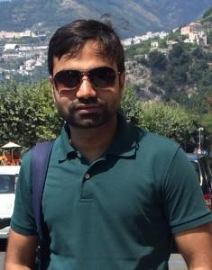

Prof. Prasanna R
Research interests: Supply chain logistics, Network Design, Location and Interdiction problems, Large Scale Optimization under Parameter Uncertainty.

Prof. Vikas Vikram Singh
Research interests: Game Theory, Stochastic Games, Stochastic Optimization, Distributionally Robust Optimization, Operations Research

Prof. Raunak Bhattacharya
Research interests: Imitation learning, Joint human-AI decision making, Autonomous agents, Reinforcement learning, Generative modeling and Robotics.

Prof. Pramesh Kumar
Research interests: Large-scale data analytics, optimization, Uncertainty modeling and mechanism design, Transit service operations, Planning and control